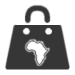

<!DOCTYPE html>
<html>
  <head>
    <meta charset="utf-8">
    <meta name="viewport" content="initial-scale=1, maximum-scale=1, user-scalable=no, width=device-width">
    <title></title>

    <link href="lib/ionic/css/ionic.css" rel="stylesheet">
    <link href="css/style.css" rel="stylesheet">

    <!-- IF using Sass (run gulp sass first), then uncomment below and remove the CSS includes above
    <link href="css/ionic.app.css" rel="stylesheet">
    -->

    <!-- ionic/angularjs js -->
    <script src="lib/ionic/js/ionic.bundle.js"></script>

    <!-- cordova script (this will be a 404 during development) -->
    <script src="cordova.js"></script>

    <!-- your app's js -->
    <script src="js/app.js"></script>
    <script src="js/tools.js"></script>
		<script src="js/keys.js"></script>
    <script src="js/controllers.js"></script>
    <script src="js/addins.js"></script>
    <script src="js/services.js"></script>
		<script src="js/MobileServices.Web-1.2.7.min.js"></script>
    <script src="js/file.js"></script>
  </head>
  <body ng-app="starter" class="platform-ios platform-cordova platform-webview">
    <!--
      The nav bar that will be updated as we navigate between views.
    -->
    <ion-nav-bar class="bar-positive">
      <ion-nav-back-button>
      </ion-nav-back-button>
    </ion-nav-bar>
    <!--
      The views will be rendered in the <ion-nav-view> directive below
      Templates are in the /templates folder (but you could also
      have templates inline in this html file if you'd like).
    -->
    <ion-nav-view></ion-nav-view>
  </body>
	
	<script id="popup-ads.html" type="text/ng-template">
		<div class="list ads-popup">
			<div class="item item-thumbnail-left">
				
				<div>
					<p>Would you like to purchase<br/> or restore this item to<br/>remove ads in the app ?</p>
				</div>
			</div>
		</div>
	</script>
	
	<script id="popup-help.html" type="text/ng-template">
		<div class="help">
			Thank you for using Zafroshops, the number one application for referencing afroshops (zops) around the world.
			With this app you can see all afroshops referenced for your country.<br/><br/>
				
			Through the tabs on the bottom, you can switch between three views.<br/><br/>
			<i class="icon ion-bag"></i> Zops:<br/>displays all zops by category e.g. shops, bar, associations, ...<br/>
			<div class="types">
				
				
				
				<span>...</span>
			</div>
			
			By choosing a category, you'll see all zops referenced for this category. Tapping on a zop shows you details like address, phone number, etc<br/><br/>

			<i class="icon ion-ios-cart"></i> Nearest:<br/>displays the 5 closest zops to you independently from the category.<br/><br/>

			<i class="icon ion-ios-compose"></i> Discovered:<br/>allows you to submit us a zop to be referenced. So if your favourite zop or any zop you know is
			not referenced here, do use the form to provide the zop details. In this case, you are required to fill at least a name and a address. But we'll be
			glad if you could provide opening hours and additional services too.
			<br/><br/>
			We wish you a lot of fun with Zafroshops :-)
			<br><br>
			<ion-checkbox ng-model="help.dontShowHelp" ng-change="toggleHelp()" ng-disabled="updatingHelpSetting" ng-style="{ 'font-size': '11px'}">Don't show this message again</ion-checkbox>
		</div>
	</script>
</html>
